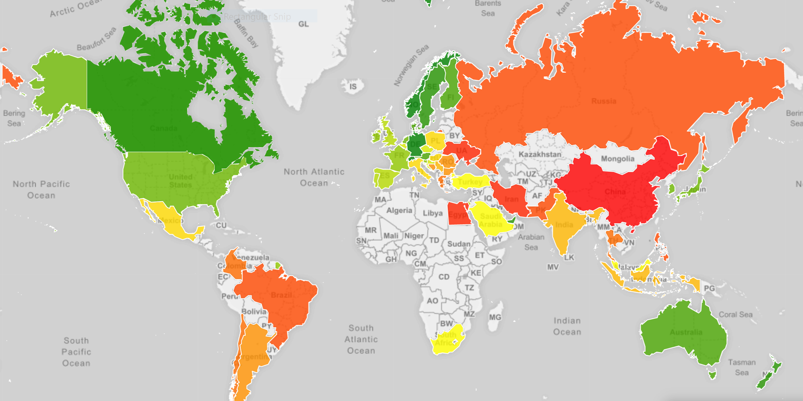
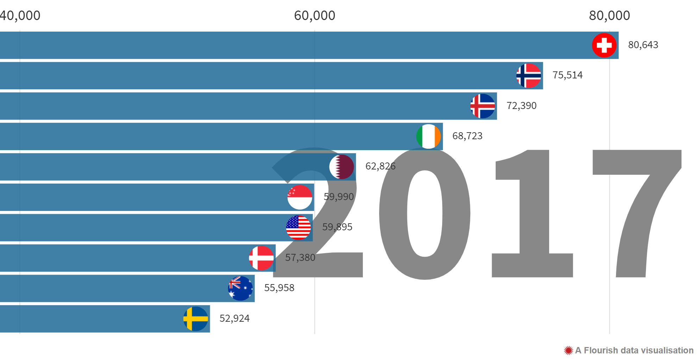

We found that GDP per capita does usually couple with a better life. However this is not always true especially between rich countries. Amongst developing nations there can also be large differences. Russia and Mexico have a very similar GDP per capita index 8.9k and 8.8k respectively yet Russia has a 49-point deficit on quality of life. Unsurprisingly there are other factors at play here.
Also look at United States and Canada. They are in the same scale for quality of life index, but GDP per capita in USA is a couple scales higher than Canada. From 2012-2016 most countries improve a little on both quality of life and GDP per capita. There are few nice surprises such as China tripling its quality of life score while increasing its GDP per capita by 28%.
So does higher GDP per capita indicate higher quality of life? The answer is mostly yes - BUT they are not always parallel. Click on the map to the right to see your country and year of choice!
Choropleth Map - GDP vs. Quality of Life
>
We see a large jump in 2016 probably due to a strengthening US economy and a general rally in most stock markets.
Noteworthy countries in this chart are China and India with once great strides on quality of life. China jumped 83 points from 2015-2016. India improved by 30 points. The Asian average QLI 48 in 2012 and 112 in 2016 a 48 point increase.
The average QLI for all countries in 2012 was 77 and in 2016 it was 145. This increase in our data is not only due to strength. The 68-point increase due to the data dropping some of the low qii nations in 2016).
In 2012, bubbles are spread out. However, as we slide the year to 2016 (play chart), the continents aggregate in the higher quality of life while slope is not getting any steeper. Overall the world has been moving in a positive direction.
Click on the picture to the left to see the model. Feel free to use the widget on the bottom to change the year and the menu on the right to select continents.
For a third way to compare countries and GDP per capita over time we used Flourish to make a running bar chart. We can more clearly see the high GDP per capita and high quality of life index and how they differ.
Some interesting observations are Qatar and Singapore both have higher GDP per capita than USA or Denmark. However, you don’t see Qatar or Singapore in the top 10 for quality of life.
Also the change is not proportional. Increasing GDP per capita does not lead to even close of the same increases in quality of life. A good example it the delta of the riches to bottom 10 countries is vastly different. Over 30% increase in GDP, however, the delta is less than 10% for quality of life.
Click on the picture or button on the right to see the running charts!
Bar Chart Race
GDP vs. Quality of Life: By Country

GDP alone is not a good proxy of a country’s well-being.
One’s purchasing power doesn’t represent happiness and when we talk about standard of living, a quality of life-index should always be a factor in the conversation.
GDP doesn’t tell the whole story when characterizing well-being in a country. So this can mean at a certain point the incremental increase of GDP doesn’t magnify with the same increase in happiness.
Some more research we’d like to do with machine learning later on is, is there an incremental increase in quality of life per increase in GDP? And does a country’s happiness “cap-out” at a certain GDP?